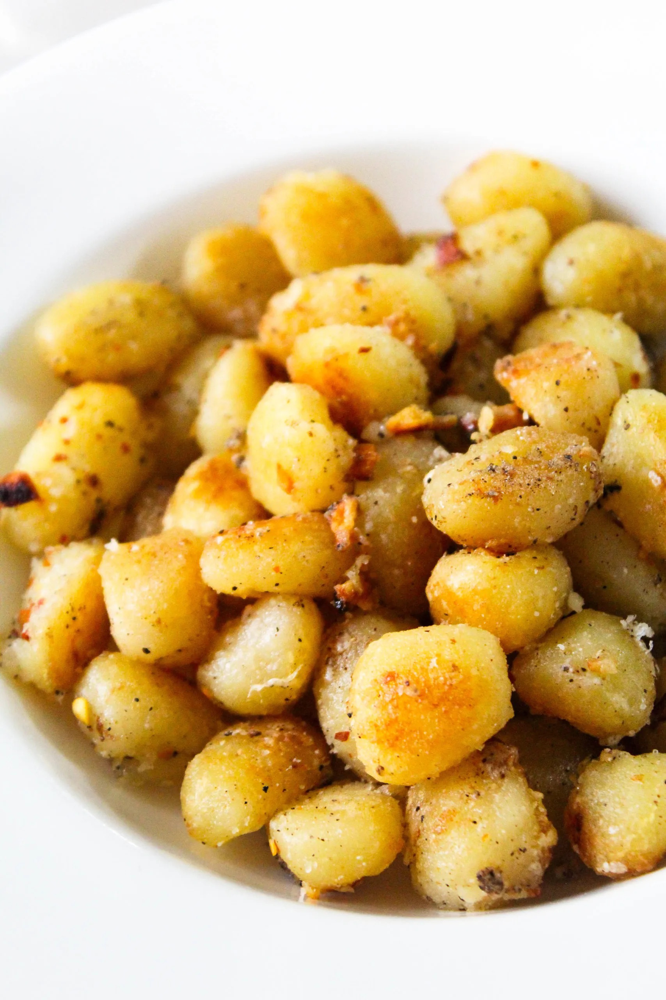

Recipes
1. Gnocci
Origin: Italian
Source: Family-Friend recipe
Category: Entree

I first made this recepie for my family during quarantine. Desptie it haveing a short list of directions and not too many ingredients, I still managed to spent around 2.5 hours in the kitchen. *_*
Nonetheless, my family apprecited the work I put into and it wasa nice opportunity for me to make dinner for my mom and dad for once. I hope to do it more often.
Ingredients
- 2 Potatoes
- 1 cup Flour
- 2 eggs
- 1 tablespoon Salt
- 1 tablespoon butter
Directions
- Boil and drain the potatoes, then mash or pass through a ricer until they are smooth and fluffy.
- Combine the potatoes with the eggs, flour, and salt, then knead all of them into a dough ball.
- Divide the dough into four even portions and shape into about half inch thick "snakes."
- Cut the snakes into small square pieces and place a thumbprint on the center to flatten them a little bit and add some decoration.
- Boil gnocci until all of them foat to the top.
- Drain gnocci and fry them in a pan with melted butter.
- Once golden brown and slightly crusted, transfer gnocci to plate and enjoy.
2. Lentil Sambusas
Origin: Ethiopian
Source: Family recipe
Category: Entree
Sambusas were and still ar a huge part of my childhood growing up ethiopian. They are my favorite ethiopian snack and I always love making them with my sister because they're such a good bonding expereince.
Ingredients
- 1 cup lentils
- 1 jalapenos (finely diced)
- 1/2 onion (finely diced)
- 1 teaspoon cardamom
- salt (to taste)
- 1 teaspoon black pepper
- 1 pack of long rectangle phillo sheets
- Olive oil for frying
Directions
- Soak lentils overnight.
- Boil lenils until tender.
- Heat Olive oil and saute the onion, jalapeno until transclucent (about 5 minuites).
- Add spices and saute for 2 more minuites.
- Add boiled and drained lentils and mix all the ingredients together and cook for about 10 minuites.
- Take off stove and let cool.
- Take a heaping table spoon of the lenil mixture and place it on the bottom corner of the phillo sheets.
- Fold the bottom corner of the phillo over the lenvils to create a triangle and continue to fold up and over keeping the triangular shape.
- Once the triangle raeaches the end of the phillo sheet, dip tour finger in water and dampen the edge of the phillo sheet before closing it off.
- Repeat steps 7 - 9 until phillo sheets are done.
- Place sambusas into a pot of flying oil an fry until golden brown, making sure to be gentile so the filling says inside the folded phillo sheets.
- After flying place Sambusas on plate with paper towel on it to let excess oil drip off and cool.
- Once cool, serve and enjoy.
3. Swedish Pancakes
Origin: Sweden
Source: Kristi, True noth Kitchen.com
Category: Breakfast

This recepe looks super interesting especially since I'm huge fan of American pancakes. The swedish pancakes remind me a bit of a crepe because of they're flatness.
Ingredients
- Butter
- Sugar
- Eggs
- Vanilla
- Milk
- Water
- Salt
- Flour
Directions
- Combine all ingredients in a blender and blend until completely smooth.Transfer to the refrigerator to rest for at least 2 hours or up to 2 days.
- Preheat the oven to 200 degrees if you plan to eat the pannkakor right away. Heat a 10 inch nonstick skillet over medium heat. Stir the batter briefly to recombine. Brush skillet with melted butter. Pick the skillet up off of the burner and quickly add ¼ cup of batter. Immediately begin swirling the batter around the skillet so that it coats the bottom of the pan. Continue swirling until the batter is just set. Return skillet to the burner. Cook until the pancake is golden brown in spots on the bottom, about 30 seconds. Use a thin spatula to loosen the pancake, flip it over continue to cook on the other side for about 30 seconds. Transfer to a plate. Cover with foil and transfer to oven to keep warm and repeat with remaining batter, wiping out skillet in between pancakes with paper towel as needed.
- Serve with lingonberry jam and butter (see note below) or other desired toppings and/or fillings. See notes below for more information about making ahead of time and storing in the refrigerator or freezer.